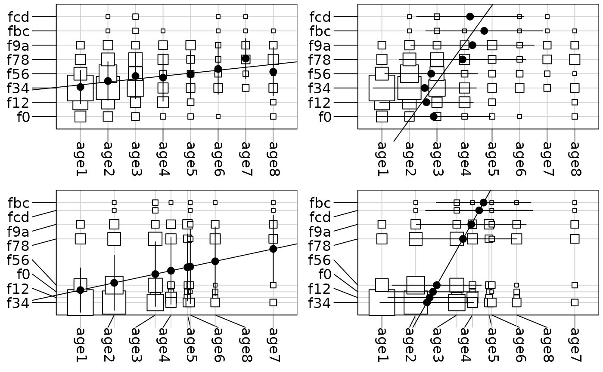

Plot of Contingency Tables
table.cont.Rdpresents a graph for viewing contingency tables.
Arguments
- df
a data frame with only positive or null values
- x
a vector of values to position the columns
- y
a vector of values to position the rows
- row.labels
a character vector for the row labels
- col.labels
a character vetor for the column labels
- clabel.row
a character size for the row labels
- clabel.col
a character size for the column labels
- abmean.x
a logical value indicating whether the column conditional means should be drawn
- abline.x
a logical value indicating whether the regression line of y onto x should be plotted
- abmean.y
a logical value indicating whether the row conditional means should be drawn
- abline.y
a logical value indicating whether the regression line of x onto y should be plotted
- csize
a coefficient for the square size of the values
- clegend
if not NULL, a character size for the legend used with
par("cex")*clegend- grid
a logical value indicating whether a grid in the background of the plot should be drawn
Examples
data(chats)
chatsw <- data.frame(t(chats))
chatscoa <- dudi.coa(chatsw, scann = FALSE)
par(mfrow = c(2,2))
table.cont(chatsw, abmean.x = TRUE, csi = 2, abline.x = TRUE,
clabel.r = 1.5, clabel.c = 1.5)
table.cont(chatsw, abmean.y = TRUE, csi = 2, abline.y = TRUE,
clabel.r = 1.5, clabel.c = 1.5)
table.cont(chatsw, x = chatscoa$c1[,1], y = chatscoa$l1[,1],
abmean.x = TRUE, csi = 2, abline.x = TRUE, clabel.r = 1.5, clabel.c = 1.5)
table.cont(chatsw, x = chatscoa$c1[,1], y = chatscoa$l1[,1],
abmean.y = TRUE, csi = 2, abline.y = TRUE, clabel.r = 1.5, clabel.c = 1.5)

par(mfrow = c(1,1))
if (FALSE) { # \dontrun{
data(rpjdl)
w <- data.frame(t(rpjdl$fau))
wcoa <- dudi.coa(w, scann = FALSE)
table.cont(w, abmean.y = TRUE, x = wcoa$c1[,1], y = rank(wcoa$l1[,1]),
csi = 0.2, clabel.c = 0, row.labels = rpjdl$lalab, clabel.r = 0.75)
} # }